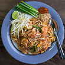

|  Pad thai or phad thai (/ˌpɑːd ˈtaɪ/ or /ˌpæd ˈtaɪ/; Thai: ผัดไทย, rtgs: phat thai, ISO: p̄hạdịthy, pronounced [pʰàt tʰāj] ( listen), "fried Thai style") is a stir-fried rice noodle dish commonly served as a street food and at casual local eateries in Thailand. It is made with soaked dried rice noodles, which are stir-fried with eggs and chopped firm tofu, and flavored with tamarind pulp, fish sauce (nampla, น้ำปลา), dried shrimp, garlic or shallots, red chili pepper and palm sugar, and served with lime wedges and often chopped roast peanuts. It may also contain other vegetables like bean sprouts, garlic chives, coriander leaves, pickled radishes or turnips (hua chaipo, หัวไชโป๊), and raw banana flowers. It may also contain fresh shrimp, crab, squid, chicken or other proteins. Vegetarian versions may substitute soy sauce for the fish sauce and omit the shrimp. |
Ingredients: 1 (12 ounce) package rice noodles , 2 tablespoons butter, 1 pound boneless, skinless chicken breast halves, cut into bite-sized pieces, 1/4 cup vegetable oil , 4 eggs, 1 tablespoon white wine vinegar, 2 tablespoons fish sauce , 3 tablespoons white sugar, 1/8 tablespoon crushed red pepper, 2 cups bean sprouts, 1/4 cup crushed peanuts, 3 green onions, chopped, 1 lemon, cut into wedges, Step: 1.Soak rice noodles in cold water 30 to 50 minutes, or until soft. Drain, and set aside. 2.Heat butter in a wok or large heavy skillet. Saute chicken until browned. Remove, and set aside. 3.Heat oil in wok over medium-high heat. Crack eggs into hot oil, and cook until firm. 4.Stir in chicken, and cook for 5 minutes. Add softened noodles, and vinegar, fish sauce, sugar and red pepper. Adjust seasonings to taste. Mix while cooking, until noodles are tender. Add bean sprouts, and mix for 3 minutes. |